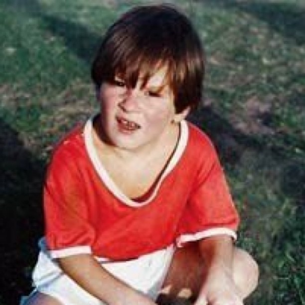
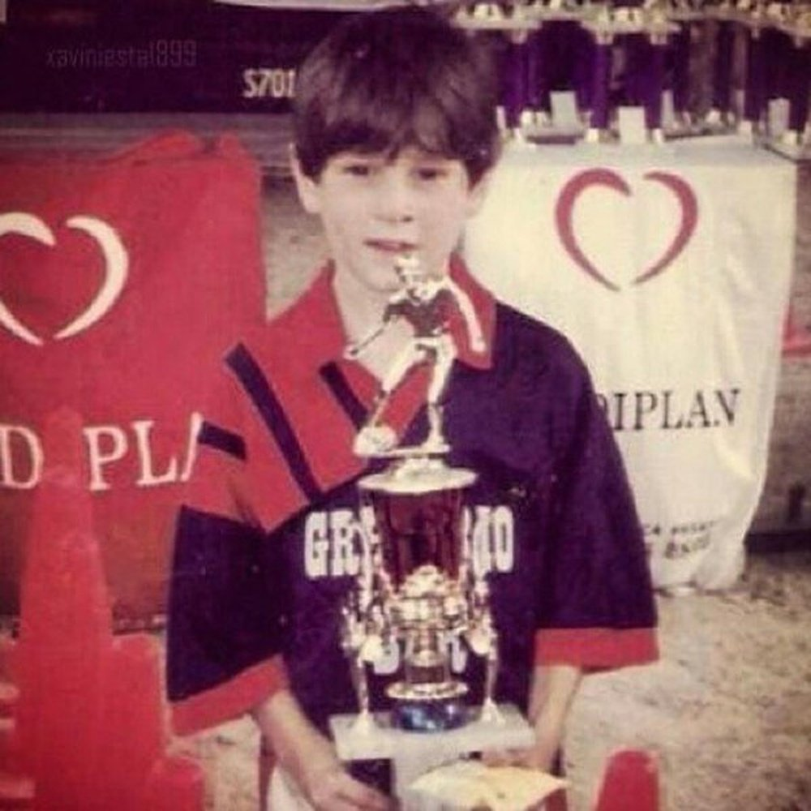

Messi was born on 24 June 1987 in Rosario, Santa Fe, the third of four children of Jorge Messi, a steel factory manager, and his wife Celia Cuccittini, who worked in a magnet manufacturing workshop. On his father's side, he is of Italian and Spanish descent, the great-grandson of immigrants from the northcentral Adriatic Marche region of Italy and Catalonia, and on his mother's side, he has primarily Italian ancestry. Growing up in a tight-knit, football-loving family, "Leo" developed a passion for the sport from an early age, playing constantly with his older brothers, Rodrigo and Matías, and his cousins, Maximiliano and Emanuel Biancucchi, both of whom became professional footballers. At the age of four he joined local club Grandoli, where he was coached by his father, though his earliest influence as a player came from his maternal grandmother, Celia, who accompanied him to training and matches. He was greatly affected by her death, shortly before his eleventh birthday; since then, as a devout Catholic Christian, he has celebrated his goals by looking up and pointing to the sky in tribute to his grandmother.
 